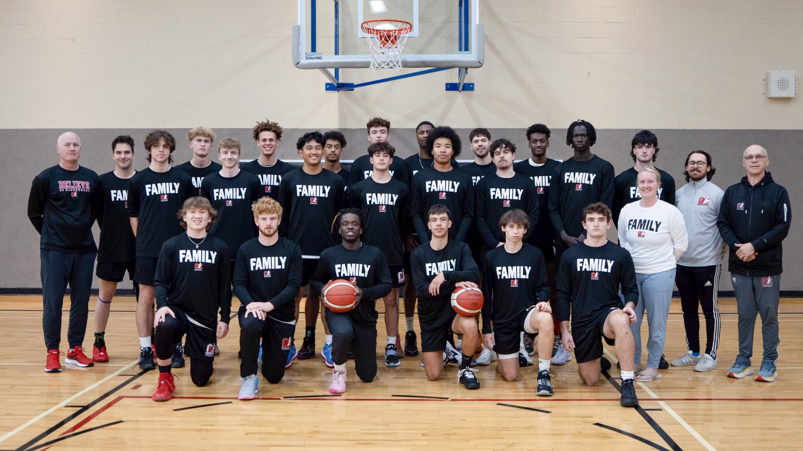

Golf
Golf is my most relaxing hobby. It helps me work on focus and consistency and is quite fun to practice and play
Basketball
As a member of the OC mens basketball team basketball is another one of my most prominent hobbies. It gives me a way to be competitive and get more athletic
Computers
Computers have been a passion of mine since I first started playing minecraft in the 6th grade. I hope to be able to make a career out of working with them and helping others learn to use them more effectively. I also love to code and to make things in HTML and PHP